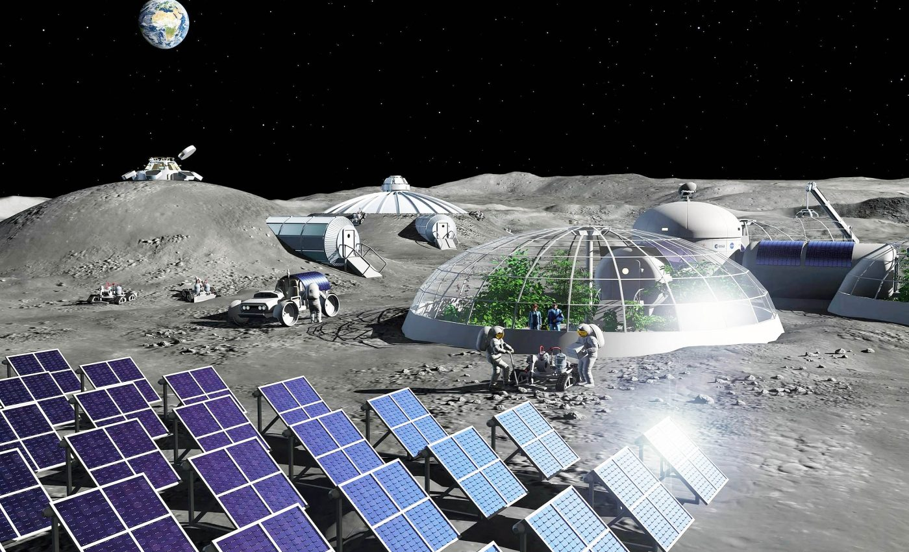

Digital-Twin Modeling of Hybrid Surface Power & Microgrid Systems for Lunar Bases
This PhD investigates how to design and evaluate scalable, resilient surface power architectures for long-duration human missions on the Moon. The focus is a digital-twin approach that links: (1) mission and environment drivers, (2) power generation and storage, (3) PMAD networks and microgrid control, and (4) ISRU-coupled load profiles — in order to quantify performance, robustness, and growth pathways for infrastructure-scale lunar outposts.

Add:
assets/projects/lunar-power/hero.jpgRecommended: a lunar outpost / power network concept image.
Quick facts
- Institution: Politecnico di Milano (DAER) — ASTRA Group
- Supervisor: Prof. Michele Lavagna
- Industrial partner: ABB (Electrification / Digital Technology)
- Core theme: Hybrid surface power + microgrids + PMAD + storage
- Method: Digital twin linking mission context → architecture → operations
- Goal: A reusable modeling framework for phased lunar infrastructure growth
Why it matters
Lunar surface power is not “just sizing solar panels”. The infrastructure must survive: long eclipses, thermal extremes, dust, radiation, uncertain load growth, and evolving mission phases. A digital twin helps move from static power budgets to operational, architecture-level performance — enabling trade-offs between redundancy, autonomy, efficiency, mass, and scalability.
Politecnico di Milano (PoliMi)
Politecnico di Milano is one of Europe’s most prestigious technical universities and a major hub for aerospace engineering, with recognized excellence in space systems, mission design, and astrodynamics. Its aerospace and engineering performance is consistently featured across major international ranking frameworks, including QS by Subject (12th in the World), ShanghaiRanking - GRAS (15th in the World), Times Higher Education (63rd in the World), and SCImago (7th in the World OCDE).
ASTRA Group & Prof. Michele Lavagna
This PhD is carried out within ASTRA (Advanced Space Technologies for Robotics & Astrodynamics), a research group focused on mission design, astrodynamics, and advanced space-system concepts. Under the supervision of Prof. Michele Lavagna, the project is positioned at the intersection of mission-driven requirements and engineering-grade system design — a natural framework for developing scalable surface infrastructure architectures for lunar exploration.
Core questions
- How to model lunar surface microgrids across mission phases (deployment → growth → steady ops)?
- What are good metrics for resilience (fault tolerance, recovery, energy margin) at infrastructure scale?
- How to couple ISRU-driven loads and storage scheduling into power architecture trade-offs?
- How to benchmark architectures using heritage (ISS/Orion principles) while accounting for lunar constraints?
Key outputs
- A modular architecture model (generation / storage / PMAD / loads / control).
- A simulation/analysis pipeline for energy flows and operational scenarios.
- Scalability studies for phased build-up and expansion of outpost power networks.
- Design rules and reference cases for future mission architecture work.
WP1 — Mission & Environment Drivers
ContextCapture the boundary conditions that dominate lunar power design: illumination cycles, thermal extremes, dust, radiation, terrain constraints, mobility, and mission-phasing assumptions (e.g., early outpost vs expansion).
WP2 — Reference Architectures & Heritage Benchmarking
ArchitectureBuild reference PMAD and power-system architectures inspired by heritage: distributed vs centralized distribution, voltage levels, redundancy strategies, storage placement, and operational principles.
WP3 — Hybrid Generation & Storage Modeling
EnergyModel hybrid supply (solar + storage, fuel cells, nuclear interfaces, etc.), with realistic efficiency chains and power electronics. Evaluate dispatch and storage scheduling across representative operational scenarios.
WP4 — Microgrid Operations & Control Concepts
OperationsIntegrate control logic at a “mission-usable” abstraction level: load shedding priorities, reconfiguration under failures, state-of-charge constraints, and autonomy approaches relevant to lunar comm delays and safety.
WP5 — ISRU-Coupled Power Flows
ISRURepresent ISRU loads (e.g., oxygen production, resource excavation, processing) as power-hungry subsystems with duty cycles, ramp rates, and coupling to storage and generation sizing in a scalable outpost growth scenario.
WP6 — Digital Twin Integration & Trade Space Exploration
Digital twinAssemble the end-to-end modeling framework and run trade studies: architecture choices vs mass, robustness, energy margin, fault tolerance, and upgrade pathways. Deliver reference cases + reusable templates.
Modeling approach
- Architecture-level modeling (generation ↔ storage ↔ PMAD ↔ loads ↔ control)
- Scenario-based simulation (eclipse, contingencies, phased growth)
- Resilience metrics (energy margin, recovery time, critical load availability)
- Trade-space exploration (mass, redundancy, efficiency, scalability)
Implementation stack
- MBSE / architecture representation (placeholder — your choice)
- Numerical modeling & scripting (Python / MATLAB — placeholder)
- Power system abstractions & performance models
- Documentation & reproducibility (Git/GitHub workflows)
(You can later replace placeholders with exact tools once you finalize the stack.)
Reference cases & environment drivers
Define mission assumptions, environment constraints, baseline load profiles, and create initial reference power architectures.
Hybrid power modeling + operations
Integrate generation/storage efficiency chains, run operational scenarios, and develop control abstractions (load shedding, reconfiguration).
ISRU coupling + trade studies
Add ISRU modules and study how outpost growth changes power flows, storage scheduling, and PMAD scaling decisions.
Digital twin framework + guidelines
Consolidate into a reusable framework, publish reference cases, and deliver design rules for future lunar infrastructure power architectures.
What this page will host
- Architecture diagrams (PMAD, microgrid topology, phased growth)
- Scenario plots (energy margin vs time, SoC, load shedding events)
- Reference configuration library (baseline cases)
- Publications / talks (links)
Project-related links (placeholders)
Figures & photos
fig_architecture.jpg
fig_scenario.jpg
photo_lab.jpg
fig_isru.jpg
fig_growth.jpg
fig_resilience.jpg
Interested in collaboration?
I’m happy to connect with researchers and engineers working on lunar surface systems, power architectures, energy storage, PMAD, microgrids, and digital-twin/MBSE approaches for exploration infrastructure.